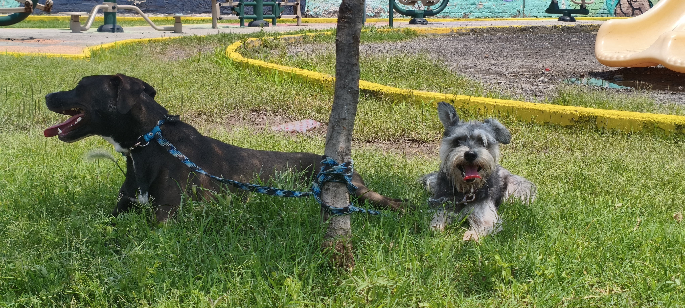
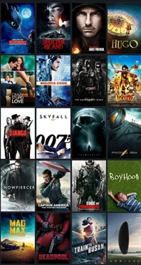
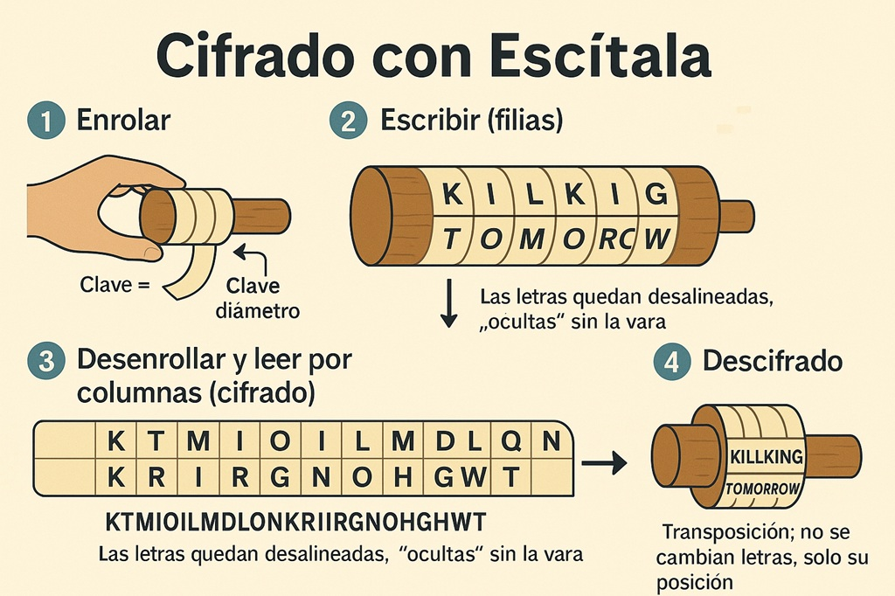
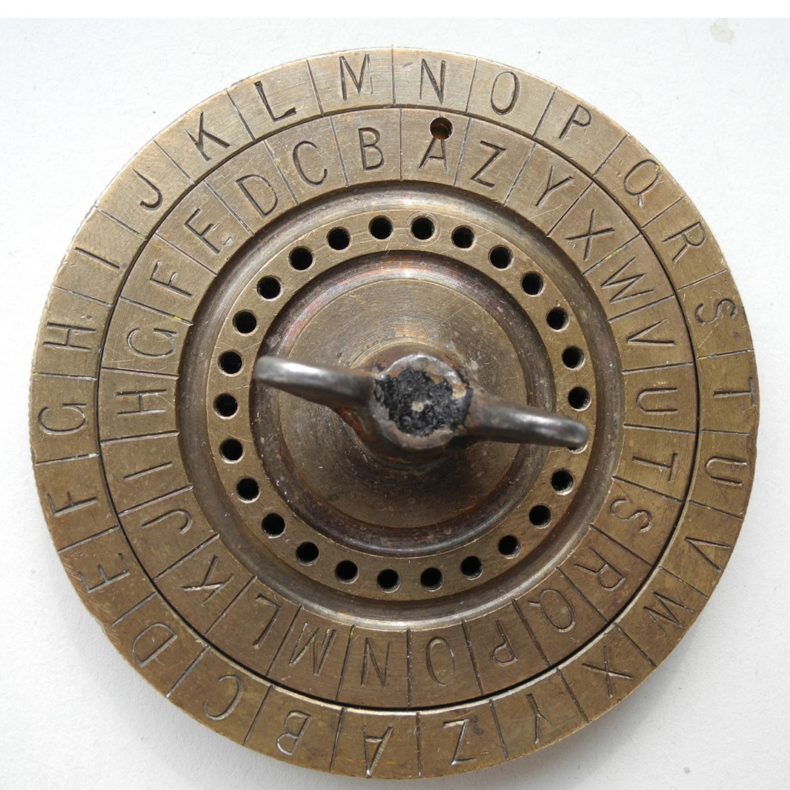

Escuela Superior de Cómputo (ESCOM - IPN)
Estudiante de Ingeniería en Sistemas Computacionales
¡Bienvenido a mi página personal!
Descargar CV Descargar Llave Pública¡Hola! Soy Jesús, un apasionado por el desarrollo de software, la ingeniería y la tecnología. Disfruto aprender sobre nuevas herramientas y aplicar mis conocimientos en proyectos reales.
Correo: jtorresp2200@alumno.ipn.mx
GitHub: github.com/tu_usuario
Este proyecto consistió en diseñar y construir aplicaciones desde cero para teléfonos celulares. Me enfoqué en crear pantallas que fueran fáciles y atractivas de usar para cualquier persona, mientras que por "detrás" programé todas las instrucciones necesarias para que la aplicación funcionara rápido y sin errores en el dispositivo móvil.
Trabajé con servidores virtuales, que son básicamente computadoras que funcionan a través de internet. Mi tarea principal fue actuar como un inspector de seguridad: utilicé herramientas especializadas para escanear el sistema, buscar puntos débiles y proponer soluciones para proteger la información contra posibles ataques de hackers o intrusos.
Disfruto mucho salir a caminar con mis perros.

Me encantan los géneros de acción y terror. Siempre es genial disfrutar de la adrenalina, la animación fluida y el buen suspenso que ofrecen estas historias para desconectarse un rato.

Salir a caminar por la playa es una de mis actividades favoritas. Sentir la brisa del mar y alejarse de la ciudad es la mejor manera de relajarse y recargar energías.
Utilizada en la antigua Grecia (siglo V a.C.), consistía en enrollar una tira de pergamino o cuero en un bastón. El mensaje solo podía leerse si el receptor tenía un bastón del mismo diámetro exacto.

Julio César protegía sus mensajes militares desplazando cada letra un número fijo de posiciones en el alfabeto (generalmente 3). Fue uno de los primeros métodos de cifrado por sustitución conocidos.
Inventado en 1467, fue el primer dispositivo de cifrado polialfabético. Usaba dos discos concéntricos con letras; al girarlos durante el mensaje, se cambiaba la regla de sustitución, haciendo el código mucho más difícil de romper.
